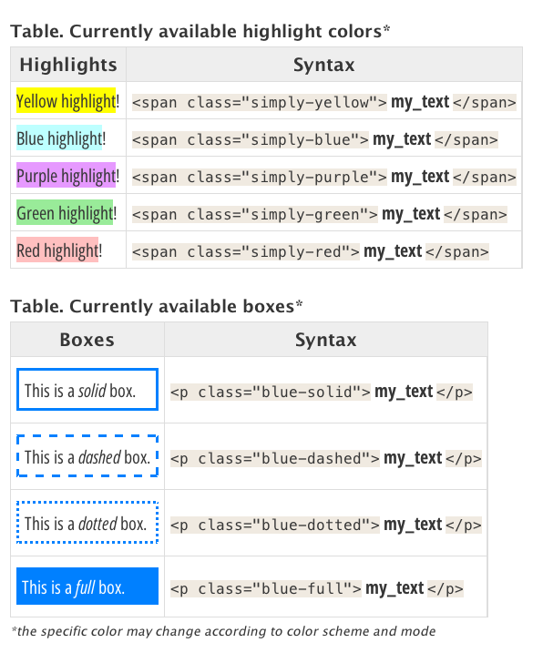
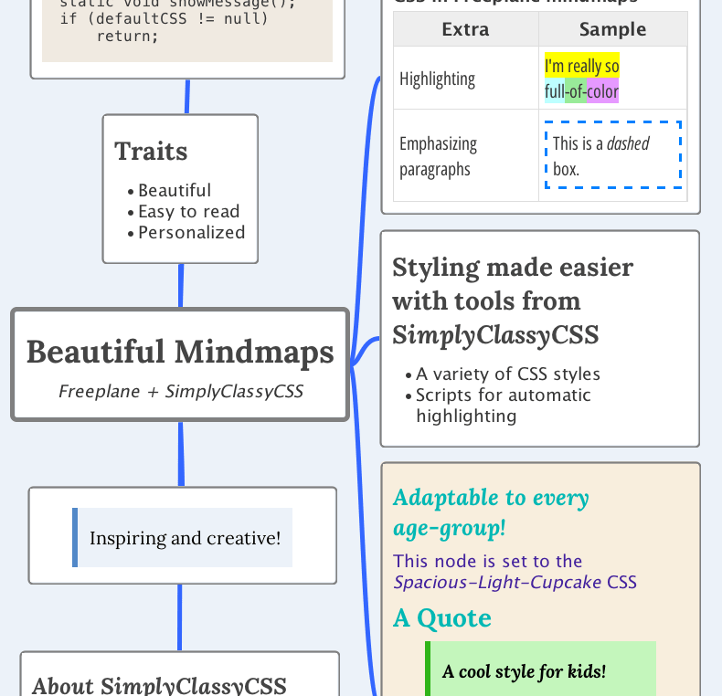

Usage
SimplyClassyCSS features different styles (e.g “Spacious”).
For each style, different color schemes may be supported (e.g “Standard”, “Gruvbox”).
For each color scheme, light or dark mode (or both) are supported.
Set-up
- Check out the Gallery and select your preferred CSS. Download it.
- Configure your software/environment to use that CSS.
- Check the required fonts listed in the screenshot and install any missing ones. All fonts are free Google fonts, and can be obtained from: https://fonts.google.com/.
- After installing the fonts, restart the software where you will be using the CSS.
Styled Paragraphs and Sections
When using any of the SimplyClassyCSS styles,
text inside special
<span>
tags becomes highlighted. Additionally, special
<p>
tags draw styled boxes around your paragraphs. Very useful for
studying, analyzing or creating emphasis on texts. The syntax
is:

Extra: Automatic styling scripts
The groovy scripts SpanHighlighter
and BoxedParagraph
wrap selected text in a
JTextComponent
(Java Swing) with the desired syntax.
Use in Freeplane

To use in freeplane: after setting up the CSS style, install the scripts, select the text you’d like to emphasize, and call the desired script: the appropriate tags will be inserted automatically. A brief explanation on how to use each script:
- SpanHighlighter Script
- Freeplane
Tip! You can use the SpanHighlighter
script to automatically
surround the text you’d like to highlight with
<span class="...">my_text</span>. The default is the yellow color. You can change the color simply by changing theclassattribute. The script gets installed in the menuFormat -> Highlight -> Span Highlighter. Suggestion: for quick access, assign thectrl + shift + Hshortcut to the script. CLICK HERE FOR THE FULL GUIDE
- BoxedParagraph Script
- Freeplane
Tip! You can use the BoxedParagraph
script to automatically
surround the paragraph you’d like to enclose in a
box with
<p class="...">my_paragraph</p>. The default is blue dotted box. You can change it by modifying theclassattribute. The script gets installed in the menuFormat -> Highlight -> Boxed Paragraph. Suggestion: for quick access, assign thectrl + shift + Pshortcut to the script. CLICK HERE FOR THE FULL GUIDE
SimplyClassyCSS, except logos and otherwise noted, is licensed under a BSD-3-Clause license, and it is free to use according to its terms. See information on licensing.
Copyright © 2023 B Barbosa. All rights reserved.